Префектура Иватэ · Мориока · ремёсла
«Камасада» в Мориоке: чугун намбу-тэкки и уроки финского дизайна
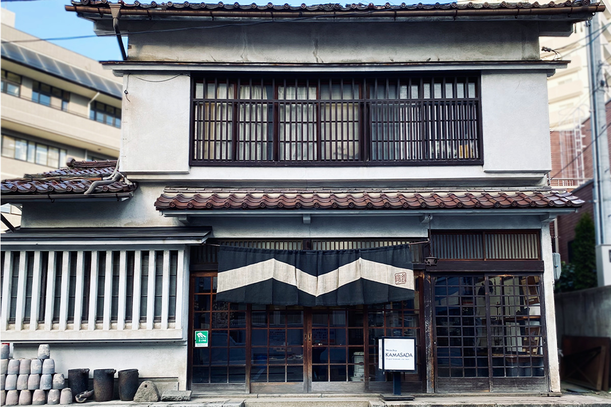
Чугунные чайники намбу-тэкки знают далеко за пределами Японии, но в мастерской «Камасада» из Мориоки чугун давно перестал быть только вещью для чайной церемонии. Сковороды и кастрюли, придуманные здесь полвека назад, по-прежнему выглядят современно, и у этого есть объяснение.
История
Чугун, которым славился Намбу
Намбу-тэкки, чугунная посуда из Иватэ, насчитывает около 400 лет. Литьём из железа издавна занимались в двух местах: в Мориоке и в нынешнем городе Осю, бывшем Мидзусаве. Уже в начале эпохи Эдо здесь делали чугунные вещи, а славу им принёс восьмой правитель княжества Мориока Тосикацу Намбу.
Ремесло пережило реставрацию Мэйдзи и Вторую мировую войну, но в 1970-х, когда страна жила быстрым экономическим ростом, традиционные ремёсла Японии пришли в упадок. Чтобы их поддержать, приняли закон о традиционных ремёслах. По его условиям близкие по географии производства одного рода нужно было объединять, поэтому Мориока и Мидзусава, хотя история и изделия у них разные, подали заявку вместе, под общим именем «намбу-тэкки». В 1975 году намбу-тэкки первым получило статус традиционного ремесла.
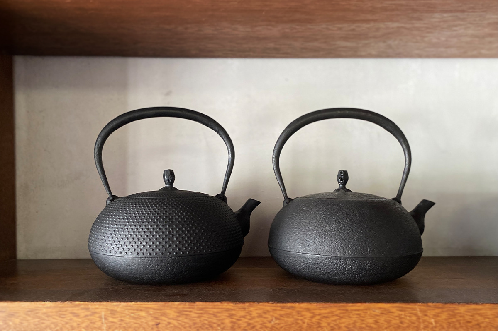
Семья
От «лавки чайников Мия» к «Камасада»
Мастерскую в 1908 году открыл Садакити Мия под названием «Лавка чайников Мия». В 1931 году дело принял его сын Сётаро Мия, а в 1945 году мастерская стала называться «Камасада».
«Думаю, имя пошло от прозвища основателя. Его звали Садакити, и в округе говорили „Садакити из лавки котлов“»
Нобухо Мия, мастер в третьем поколении
Нынешний стиль, по словам Нобухо Мии, сложился при отце. Чугунные чайники из Мориоки знали с эпохи Мэйдзи, но после войны быт и само производство изменились, и чайник из вещи для каждого дня превратился в предмет для любителей. Ручная работа к тому же стоит дорого, и покупать её могли немногие.
Сётаро Мия одним из первых понял, что ремеслу грозит опасность. Вместо привычных чайников он стал искать чугунную посуду для обычной жизни и способ делать её серийно, и так появились новые формы. Он участвовал в движении мингэй. Однажды в мастерскую пришёл Мунэёси Янаги с любимым чугунным котлом и попросил сделать такой же. Сётаро отказался: «Я не копирую чужое».
«Наверное, отец уже тогда понимал, что намбу-тэкки выйдет за рамки мингэй»
Нобухо Мия
О Янаги и о том, как мингэй прижилось в Мориоке, подробнее рассказано в статье о лавке «Когэнся».
Нобухо Мия вырос, глядя, с какой любовью отец относится к работе. В 1977 году отец внезапно умер, и сын принял мастерскую.
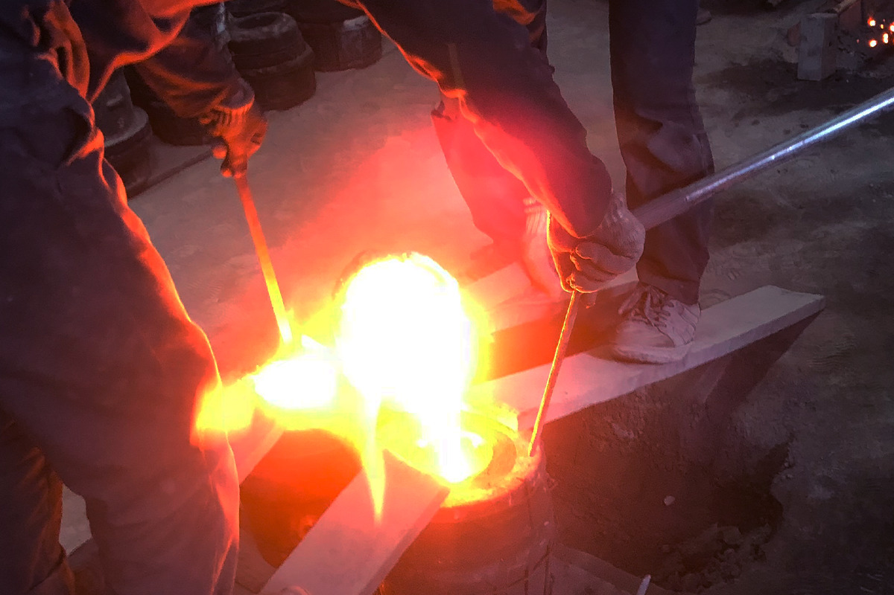
Финляндия
Чему научил север
Ассортимент «Камасада» строится на каталоге, составленном примерно в середине 1960-х. В нём классические чайники основателя и вещи, которые придумал Сётаро Мия: их отобрал для своей коллекции Крафт-центр Японии. С середины 1970-х Нобухо Мия добавлял свои модели, а какие-то снимал с производства. Так в линейке сошлись три поколения: традиционные чайники Садакити, ремесленная посуда Сётаро и вещи Нобухо, в которых ручная работа встречается с промышленным дизайном.
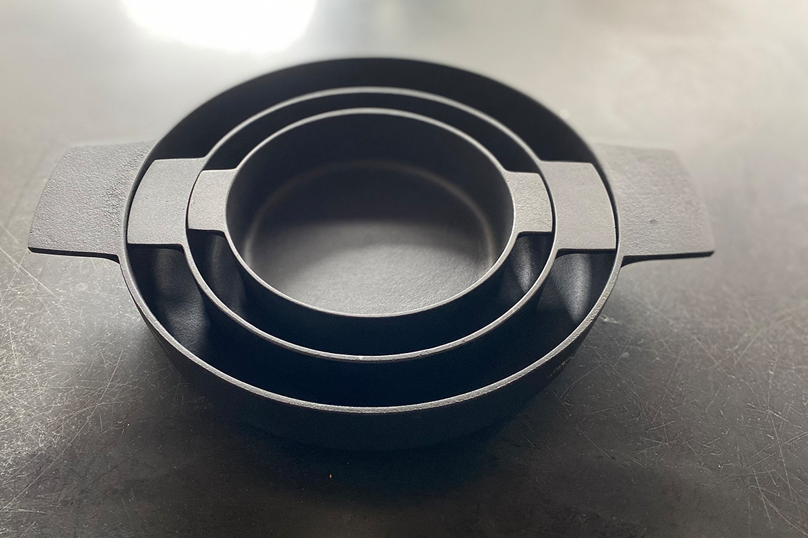
Нобухо Мия окончил художественный университет, но, по его словам, к нынешнему стилю его привела жизнь в Финляндии. Ещё от отца он слышал слова «скандинавский дизайн» и имя Кая Франка и очень ими интересовался.
В 30 лет он подал заявку на программу Ротари-клуба для зарубежных стажировок и получил поездку в Финляндию. Больше месяца он ездил по стране и изучал, откуда взялся скандинавский дизайн.
«Я не учился в какой-то особой школе. Мне было важно на себе почувствовать историю и природу страны, понять северное общество целиком и то, как там выросла культура вместе с дизайном. На севере очень ценили, есть ли у дизайна оригинальность. А оригинальность рождается из страны, где ты живёшь, и из твоей собственной жизни. Дизайн это не просто стиль, за ним должна стоять опора. И я понял, что о своей стране и своём крае, из которых должен рождаться мой дизайн, я, японец, по сути ничего не знаю»
Нобухо Мия
Вернувшись, он заново взялся за японскую историю и чайную церемонию, а каждую новую вещь приучил себя описывать словами, чтобы замысел был ясен.
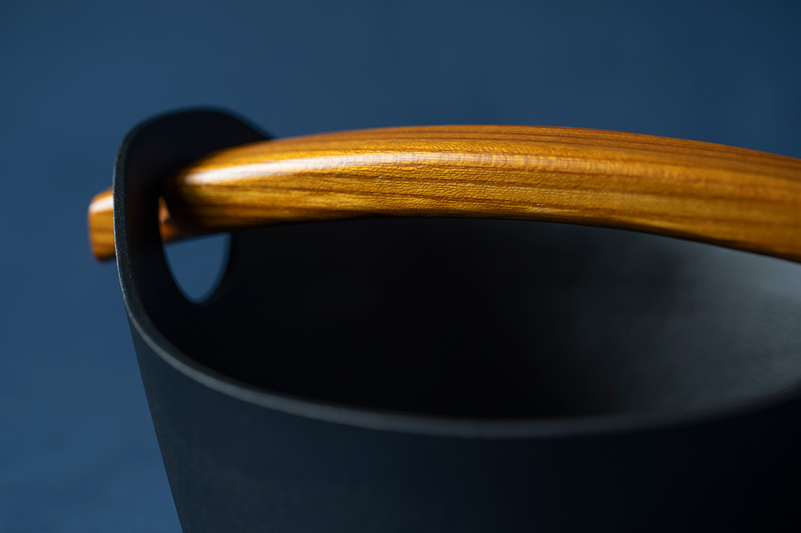
Посуда
Сковороды на всю жизнь
Посуда «Камасада» одновременно классическая и очень современная. Многое продумано для того, кто ею пользуется: вещи подходят для индукционных плит, кастрюли складываются одна в другую.
Самую узнаваемую вещь мастерской, кастрюлю «ёнабэ», Нобухо Мия придумал в середине 1980-х. Япония тогда была завалена вещами, и после Финляндии ему хотелось предложить жизнь, в которой хватает самого необходимого.
«Нет инструмента проще и крепче чугунной кастрюли. Если у тебя есть вещь на всю жизнь, каждый день становится немного радостнее»
Нобухо Мия
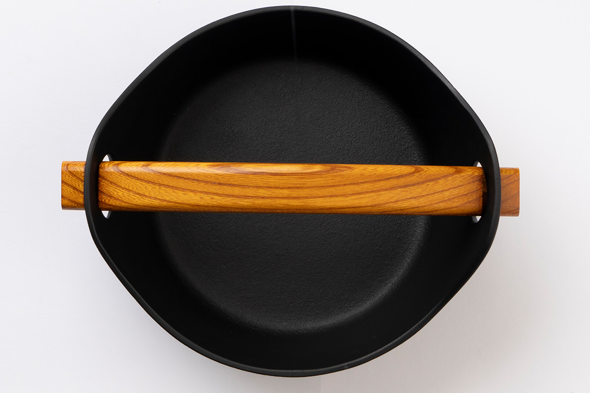
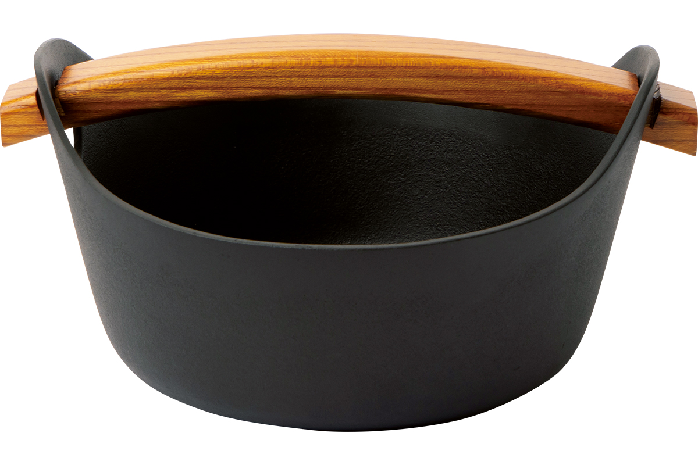
Сковороду «Ван хэнд» в маленьком размере мастер придумал в 1977 году, и она получила награду на Японской выставке ремёсел. Для своего времени форма была необычной, а продукты на ней в меру подрумяниваются. Весит она 900 г, а стоила в 2024 году 5060 иен.
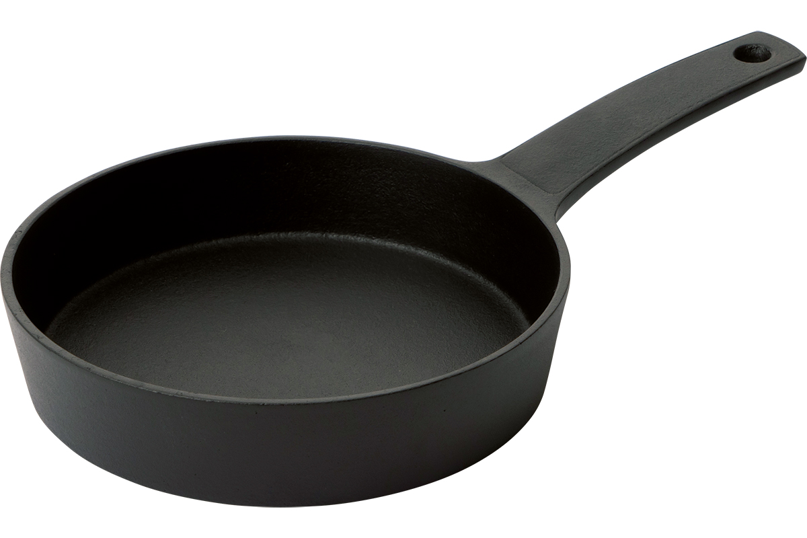
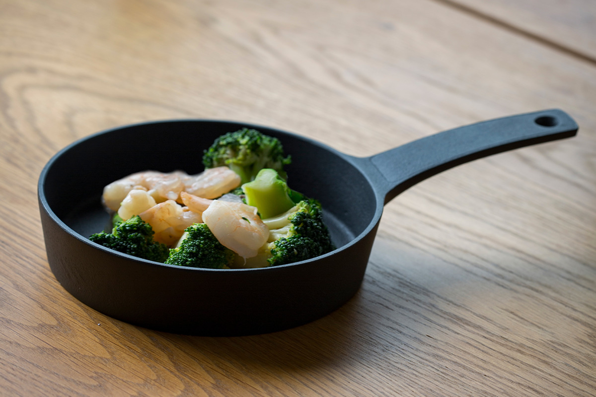
Мелкую сковороду мастер придумал ещё в 1975 году и потом понемногу дорабатывал. Длинной тонкой ручкой легко управлять, а отлита она вместе с корпусом, так что ломаться нечему. Весит сковорода 1320 г, а стоила в 2024 году 9900 иен.
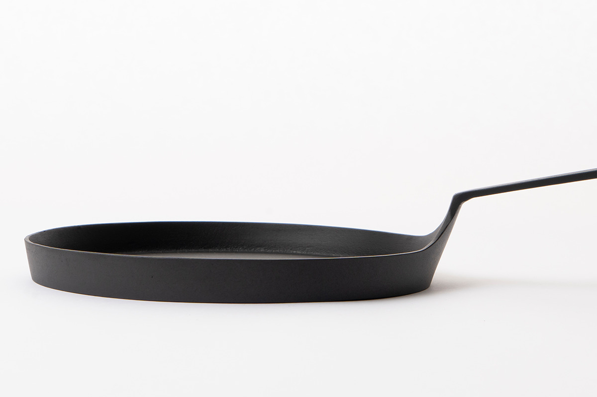
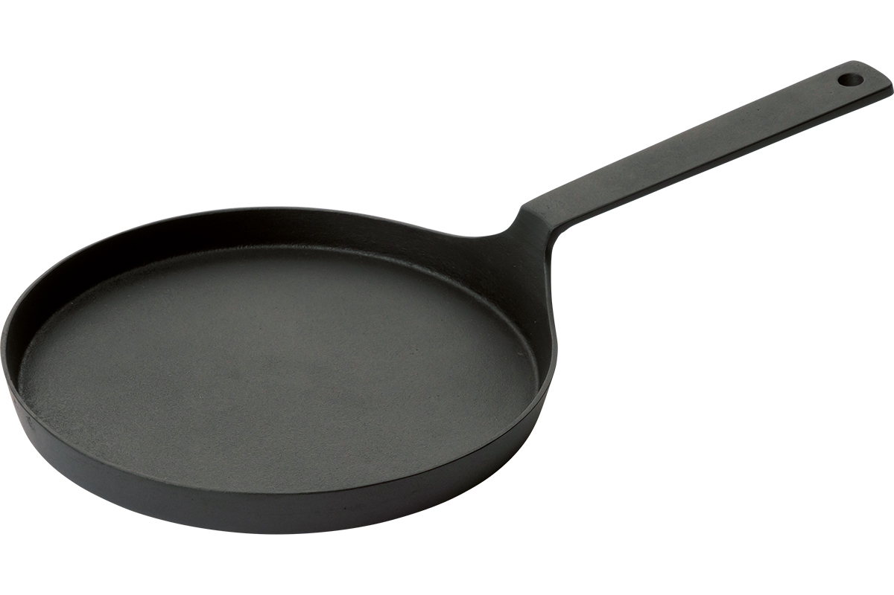
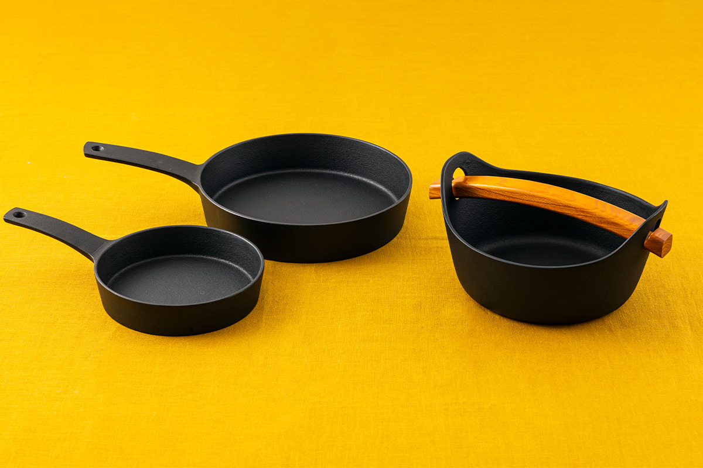
Принципы
Учиться, ломать и учиться снова
«Я не могу делать то, что далеко от моей жизни. Бывают заказы и совместные проекты, где от меня ждут не того, что мне близко, и тогда я учусь и расширяю свои возможности. Например, я взялся за светильники и разбираюсь в электричестве и светодиодах»
Нобухо Мия
Так мастер рассказывал в 2023 году. О том, куда идёт «Камасада», он рассуждает словами из японской традиции. Мацуо Басё говорил о «фуэки рюко», единстве неизменного и текучего, а Сэн-но Рикю учил «сю-ха-ри»: сначала следуешь образцу, потом нарушаешь его, потом отходишь от него. Нобухо Мия считает, что эта философия живёт и в японских ремёслах. Ещё он любит слова «меньше значит больше» и «Бог в деталях».
Главное для него не халтурить в мелочах. Не остались ли следы инструмента, не протекает ли сосуд, не поранит ли твёрдое и тяжёлое железо человека или вещь: на такое легко не обратить внимания, поэтому он проверяет это особенно тщательно. Многое тело усваивает только в работе, а если сомневаешься, полезно посмотреть старые вещи мастеров прошлого и вернуться к истокам. Потом снова «ломать», не отставая от времени: это, по его словам, судьба любого дизайнера. Он добавляет, что у следующего поколения будут свои поиски и их надо уважать.
Сам Нобухо Мия учился у отца и деда, а потом сломал их правила и нашёл свой стиль. Вероятно, именно эта привычка передавать дело дальше и объясняет, почему «Камасада» живёт уже больше века.
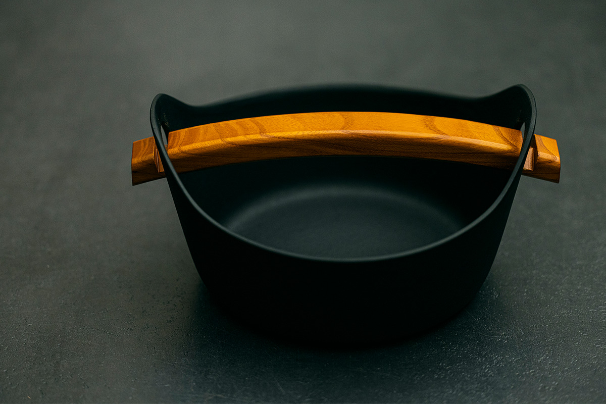
Магазин
Лавка на Конъя-тё
Мастерская и магазин «Камасада» находятся на улице Конъя-тё, примерно в 10 минутах на машине от станции Мориока. Улица застроена старыми домами, многие из них охраняются как памятники архитектуры.
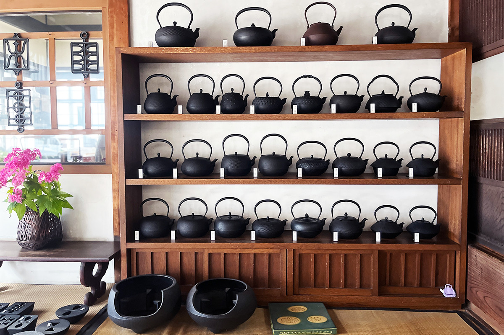
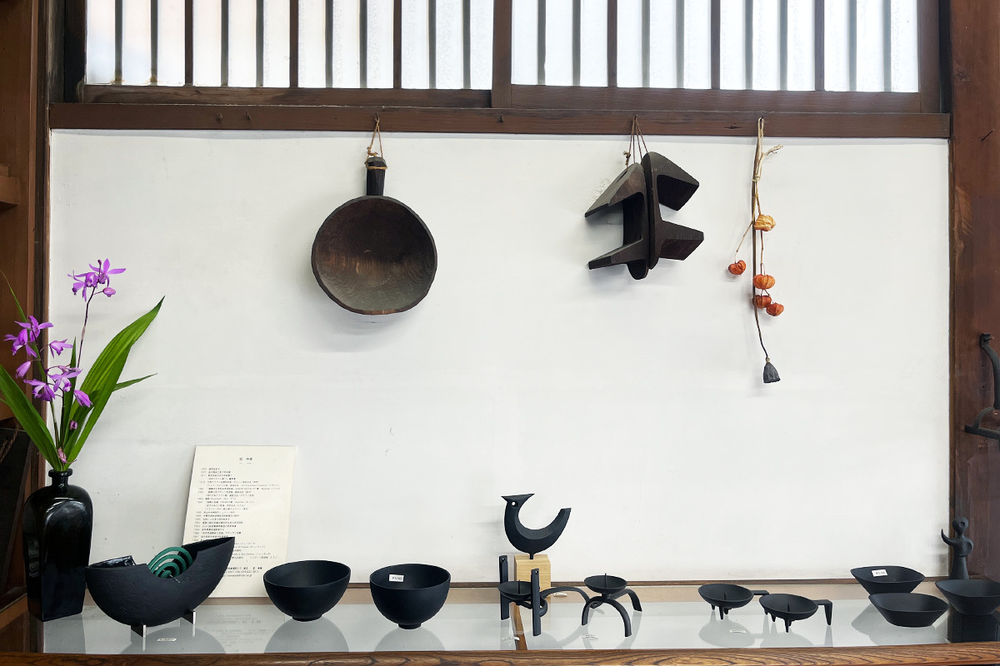
«Камасада»
- Адрес
- префектура Иватэ, Мориока, Конъя-тё, 2-5
- Телефон
- +81 19-622-3911
- Часы работы
- 9:00–17:30
Фото: Кадзуя Хаяси.